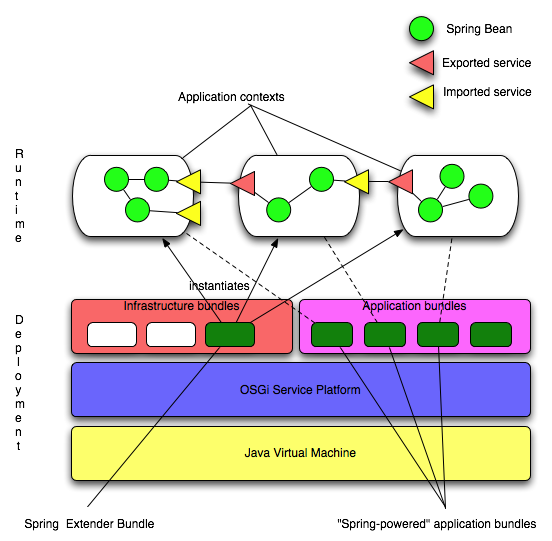

for OSGi(tm) Service Platforms.
Version 1.0 M3
This document is the reference guide for Spring Dynamic Modules. It defines the syntax and semantics for the OSGi Service Platform based namespaces; the Dynamic Modules extender bundle; and the OSGi manifest header entries defined by Dynamic Modules. For a tutorial introduction to building OSGi-based applications with Spring Dynamic Modules see the online tutorials and user guide.
OSGi developers looking for an introduction to Spring should review the introductory articles on the springframework.org site.
Note: OSGi is a trademark of the OSGi Alliance. Project name is pending final approval from the Alliance.
Note: Please see the known issues page for Spring Dynamic Modules 1.0 M3 release.
The Spring Framework is the leading full-stack Java/JEE application framework. It provides a lightweight container and a non-invasive programming model enabled by the use of dependency injection, AOP, and portable service abstractions. The OSGi Service Platform offers a dynamic application execution environment in which modules (bundles) can be installed, updated, or removed on the fly. It also has excellent support for modularity and versioning.
Spring Dynamic Modules makes it easy to write Spring applications that can be deployed in an OSGi execution environment, and that can take advantage of the services offered by the OSGi framework. Spring's OSGi support also makes development of OSGi applications simpler and more productive by building on the ease-of-use and power of the Spring Framework. For enterprise applications, the combination of Spring Dynamic Modules and the OSGi platform provides:
We believe that the combination of OSGi and Spring offers a comprehensive model for building enterprise applications.
Spring Dynamic Modules supports OSGi R4 and above, and JDK level 1.4 and above. Bundles deployed for use with Spring Dynamic Modules should specify "Bundle-ManifestVersion: 2" in their manifest. We test against Equinox, Felix, and Knopflerfish as part of our continuous integration process.
Chapter 2, "Bundles and Application Contexts" describes the relationship between an OSGi Bundle and a Spring Application Context, and introduces the Spring Extender Bundle support for instantiating application contexts automatically.
Chapter 3, "Packaging and Deploying Spring-based OSGi applications" describes how to deploy the Spring Framework jar files in an OSGi environment, and how to reference external APIs from your application bundles should you need to do so. This chapter also explains some of the issues to be aware of when using existing enterprise libraries not designed for OSGi in an OSGi environment.
Chapter 4, "The Service Registry" describes how to export Spring beans as services in the OSGi service registry, and how to inject references to OSGi services into beans. This chapter also defines how the dynamic life-cycle of OSGi services and bundles is supported.
Chapter 5, "Working with Bundles" describes how to declare a bean that represents an OSGi bundle, including support for installing new bundles into the OSGi platform.
Chapter 6, "Compendium Services" describes the support provided for the OSGi Compendium Services, including the Configuration Admin service.
Chapter 7, "Testing OSGi based Applications" explains the integration testing support provided by Spring Dynamic Modules. This support enables you to write simple JUnit integration tests that can start up an OSGi environment, install the bundles needed for the integration test, execute the test case(s) inside of OSGi, and return the results to the runner. This support makes it easy to integrate OSGi integration testing into any environment that can work with JUnit.
Appendix A, "Extensions" describes extensions that are included in the 1.0 distribution, but are not guaranteed to be maintained in a backward-compatible form in future point releases. We anticipate these features moving into the core specification over time.
Appendix B, "Roadmap" describes some features that are included in the 1.0 distribution but are still considered early-access. The externals of these features may change in future releases. This appendix also discusses other planned features for which no implementation yet exists.
Appendix C defines the schemas provided by Spring Dynamic Modules.
The unit of deployment (and modularity) in OSGi is the bundle (see section 3.2 of the OSGi Service Platform Core Specification). A bundle known to the OSGi runtime is in one of three steady states: installed, resolved, or active. Bundles may export services (objects) to the OSGi service registry, and by so doing make these services available for other bundles to discover and to use. Bundles may also export Java packages, enabling other bundles to import the exported types.
In Spring the primary unit of modularity is an application context, which contains some number of beans (objects managed by the Spring application context). Application contexts can be configured in a hierarchy such that a child application context can see beans defined in a parent, but not vice-versa. The Spring concepts of exporters and factory beans are used to export references to beans to clients outside of the application context, and to inject references to services that are defined outside of the application context.
There is a natural affinity between an OSGi bundle and a Spring application context. Using Spring Dynamic Modules, an active bundle may contain a Spring application context, responsible for the instantiation, configuration, assembly, and decoration of the objects (beans) within the bundle. Some of these beans may optionally be exported as OSGi services and thus made available to other bundles, beans within the bundle may also be transparently injected with references to OSGi services.
Spring Dynamic Modules provides an OSGi bundle org.springframework.osgi.spring-osgi-extender. This bundle is responsible for instantiating the Spring application contexts for your application bundles. It serves the same purpose as the ContextLoaderListener does for Spring web applications. Once the extender bundle is installed and started it looks for any existing Spring-powered bundles that are already in the ACTIVE state and creates application contexts on their behalf. In addition, it listens for bundle starting events and automatically creates an application context for any Spring-powered bundle that is subsequently started. Section 3 describes what the extender recognizes as a "Spring-powered bundle".
The extender bundle creates applications contexts asynchronously. This behavior ensures that starting an OSGi Service Platform is fast and that bundles with service inter-dependencies do not cause deadlock on startup. A Spring-powered bundle may therefore transition to the STARTED state before its application context has been created. It is possible to force synchronous creation of application contexts on a bundle-by-bundle basis. See section 3 for information on how to specify this behavior.
If application context creation fails for any reason then the failure cause is logged. The bundle remains in the STARTED state. There will be no services exported to the registry from the application context in this scenario.
If an application context declares mandatory dependencies on the availability of certain OSGi services (see section 4.0) then creation of the application context is blocked until all mandatory dependencies can be satisfied through matching services available in the OSGi service registry. Since a service may come and go at any moment in an OSGi environment, this behavior only guarantees that all mandatory services were available at the moment creation of the application context began. One or more services may subsequently become unavailable again during the process of application context creation. Section 4.0 describes what happens when a mandatory service reference becomes unsatisfied. In practice for most enterprise applications built using Spring Dynamic Modules services the set of available services and bundles will reach a steady state once the platform and its installed bundles are all started. In such a world the behavior of waiting for mandatory dependencies simply ensures that bundles A and B, where bundle A depends on services exported by bundle B, may be started in any order.
A timeout applies to the wait for mandatory dependencies to be satisfied. By default the timeout is set to 5 minutes, but this value can be configured using the timeout directive. See section 3.0 for details.
It is possible to change the application context creation semantics so that application context creation fails if all mandatory services are not immediately available upon startup (see section 3.1). When configured to not wait for dependencies, a bundle with unsatisfied mandatory dependencies will be stopped, leaving the bundle in the RESOLVED state.
Once the application context creation for a bundle has completed, the application context object is automatically exported as a service available through the OSGi Service Registry. The context is published under the interface org.springframework.context.ApplicationContext (and also all of the visible super-interfaces and types implemented by the context). The published service has a service property named org.springframework.context.service.name whose value is set to the bundle symbolic name of the bundle hosting the application context. It is possible to prevent publication of the application context as a service using a directive in the bundle's manifest. See section 3.2 for details.
Note: the application context is published as a service primarily to facilitate testing, administration, and management. Accessing this context object at runtime and invoking getBean() or similar operations is discouraged. The preferred way to access a bean defined in another application context is to export that bean as an OSGi service from the defining context, and then to import a reference to that service in the context that needs access to the service. Going via the service registry in this way ensures that a bean only sees services with compatible versions of service types, and that OSGi platform dynamics are respected.
OSGi is a dynamic platform: bundles may be installed, started, updated, stopped, and uninstalled at any time during the running of the framework.
When an active bundle is stopped, any services it exported during its lifetime are automatically unregistered and the bundle returns to the resolved state. A stopped bundle should release any resources it has acquired and terminate any threads. Packages exported by a stopped bundle continue to be available to other bundles.
A bundle in the resolved state may be uninstalled: packages that were exported by an uninstalled bundle continue to be available to bundles that imported them (but not to newly installed bundles).
A bundle in the resolved state may also be updated. The update process migrates from one version of a bundle to another version of the same bundle.
Finally of course a resolved bundle can be started, which transitions it to the active state.
The OSGi PackageAdmin refreshPackages operation refreshes packages
across the whole OSGi framework or a given subset of installed
bundles. During the refresh, an application context in an affected
bundle will be stopped and restarted. After a refreshPackages
operation, packages exported by older versions of updated bundles, or
packages exported by uninstalled bundles, are no longer available.
Consult the OSGi specifications for full details.
When a Spring-powered bundle is stopped, the application context created for it is automatically destroyed. All services exported by the bundle will be unregistered (removed from the service registry) and the normal application context tear-down life-cycle is observed (DisposableBean and destroy-method callbacks are invoked on beans in the context).
If a Spring-powered bundle that has been stopped is subsequently re-started, a new application context will be created for it.
The Spring Framework defines a resource abstraction for loading resources within an application context (see Spring's resource abstraction). All resource loading is done through the ResourceLoader associated with the application context. The ResourceLoader is also available to beans wishing to load resources programmatically. Resource paths with explicit prefixes - for example "classpath:" are treated uniformly across all application context types (for example, web application contexts and classpath-based application contexts). Relative resource paths are interpreted differently based on the kind of application context being created. This enables easy integration testing outside of the ultimate deployment environment.
The Spring extender bundles creates a special subclass of application context, an OSGiApplicationContext. An OSGi application context treats a relative resource path as a reference to a resource defined within the bundle (the bundle and its attached fragments will be searched for matching resources). The context also supports the explicit resource path prefixes osgibundle and osgibundlejar.
A resource path of the format "osgibundle:x/y/z" searches for resource "x/y/z" in the bundle and its attached fragments (this is the same as the relative resource behavior).
A resource path of the format "osgibundlejar:x/y/z" searches for resource "x/y/z" in the bundle only, ignoring any attached fragments.
A resource path using the "classpath:" prefix searches the bundle classpath for matching resources.
All of the regular Spring resource prefixes such as "file:" and "http:" are also supported, as are the pattern matching wildcards. Resources loaded using such prefixes may come from any location, they are not restricted to being defined within the resource-loading bundle or its attached fragments.
OSGi platforms may define their own unique prefixes for accessing bundle contents. For example, Equinox defines the 'bundleresource:' and 'bundlentry:' prefixes). These platform specific prefixes may also be used with Spring OSGi, at the cost of course of tying yourself to a particular OSGi implementation.
In general there is no need to depend on any OSGi APIs when using the Spring Dynamic Modules support. If you do need access to the OSGi BundleContext object for your bundle, then Spring makes this easy to do.
The OSGi application context created by the Spring extender will automatically contain a bean of type BundleContext and with name bundleContext. You can inject a reference to this bean into any bean in the application context either by-name or by-type. In addition, Spring Dynamic Modules defines the interface org.springframework.osgi.context.BundleContextAware:
public interface BundleContextAware {
public void setBundleContext(BundleContext context);
}
Any bean implementing this interface will be injected with a reference to the bundle context when it is configured by Spring. If you wish to use this facility within a bundle, remember to import the package org.springframework.osgi.context in your bundle manifest.
During creation of an application context, access to the BundleContext object for the bundle is also available through an inheritable thread-local variable. This variable is accessible via the org.springframework.osgi.context.support.LocalBundleContext class.
public class LocalBundleContext {
public static BundleContext getContext();
}
In addition, when an operation is invoked on an OSGi service reference injected by Spring, Spring makes sure that the invoking bundle's BundleContext is accessible on the invoking thread via the LocalBundleContext.
If the extender bundle is stopped, then all the application contexts created by the extender will be destroyed. Application contexts are shutdown in the following order:
A traditional Spring application uses either a single application context, or a parent context containing service layer, data layer, and domain objects with a child context containing web layer components. The application context may well be formed by aggregating the contents of multiple configuration files.
When deploying an application to OSGi the more natural structure is to package the application as a set of peer bundles (application contexts) interacting via the OSGi service registry. Independent subsystems should be packaged as independent bundles or sets of bundles (vertical partitioning). A subsystem may be package in a single bundle, or divided into several bundles partitioned by layer (horizontal partitioning). A straightforward web application may for example be divided into four modules (bundles): a web bundle, service layer bundle, data layer bundle, and domain model bundle. Such an application would look like this:

In this example the data layer bundle yields a data layer application context that contains a number of internal components (beans). Two of those beans are made publicly available outside of the application context by publishing them as services in the OSGi service registry.
The service layer bundle yields a service layer application context that contains a number of internal components (beans). Some of those components depend on data layer services, and import those services from the OSGi service registry. Two of the service layer components are made externally available as services in the OSGi service registry.
The web component bundle yields a web application context that contains a number of internal components (beans). Some of those components depend on application services, and import those services from the OSGi service registry. Since the domain model bundle contributes only domain model types, but does not need to create any components of its own, it has no associated application context.
Each application module should be packaged as an OSGi bundle. A bundle is essentially a jar file with a META-INF/MANIFEST.MF file containing a series of headers recognized by the OSGi Service Platform. See the OSGi Service Platform Core Specification section 3.2 for details. Some OSGi implementations may support exploded jar files, but the format remains the same.
The Spring extender recognizes a bundle as "Spring-powered" and will create an associated application context when the bundle is started if one or both of the following conditions is true:
META-INF/spring with one or more files in that folder with a '.xml' extension.META-INF/MANIFEST.MF contains a manifest header Spring-Context.In addition, if the optional SpringExtender-Version header is declared in the bundle manifest, then the extender will only recognize bundles where the specified version constraints are satisfied by the version of the extender bundle (Bundle-Version). The value of the SpringExtender-Version header must follow the syntax for a version range as specified in section 3.2.5 of the OSGi Service Platform Core Specification.
In the absence of the Spring-Context header the extender expects every ".xml" file in the META-INF/spring folder to be a valid Spring configuration file, and all directives (see below) take on their default values.
An application context is constructed from this set of files. A suggested practice is to split the application context configuration into at least two files, named by convention modulename-context.xml and modulename-osgi-context.xml. The modulename-context.xml file contains regular bean definitions independent of any knowledge of OSGi. The modulename-osgi-context.xml file contains the bean definitions for importing and exporting OSGi services. It may (but is not required to) use the Spring Dynamic Modules OSGi schema as the top-level namespace instead of the Spring 'beans' namespace.
The Spring-Context manifest header may be used to specify an alternate set of configuration files. The resource paths are treated as relative resource paths and resolve to entries defined in the bundle and the set of attached fragments. When the Spring-Context header defines at least one configuration file location, any files in META-INF/spring are ignored unless directly referenced from the Spring-Context header.
The syntax for the Spring-Context header value is:
Spring-Context-Value ::= context ( ',' context ) *
context ::= path ( ';' path ) * (';' directive) *
This syntax is consistent with the OSGi Service Platform common header syntax defined in section 3.2.3 of the OSGi Service Platform Core Specification.
For example, the manifest entry:
Spring-Context: config/account-data-context.xml, config/account-security-context.xml
will cause an application context to be instantiated using the configuration found in the files account-data-context.xml and account-security-context.xml in the bundle jar file.
A number of directives are available for use with the Spring-Context header. These directives are:
For example:
Spring-Context: *;create-asynchronously=false
Creates an application context synchronously, using all of the "*.xml" files contained in the META-INF/spring folder.
Spring-Context: config/account-data-context.xml;create-asynchrously:=false
Creates an application context synchronously using the config/account-data-context.xml configuration file. Care must be taken when specifying synchronous context creation as the application context will be created on the OSGi event thread, blocking further event delivery until the context is fully initialized. If an error occurs during the synchronous creation of the application context then a FrameworkEvent.ERROR event is raised. The bundle will still proceed to the ACTIVE state.
For example:
Spring-Context: config/osgi-*.xml;wait-for-dependencies:=false
Creates an application context using all the files matching "osgi-*.xml" in the config directory. Context creation will begin immediately even if dependencies are not satisfied. This essentially means that mandatory service references are treated as though they were optional - clients will be injected with a service object that may not be backed by an actual service in the registry initially. See section 4.2 for more details.
wait-for-dependencies:=false is specified. The default is 5 minutes (300 seconds).For example:
Spring-Context: *;timeout:=60
For example:
Spring-Context: *;publish-context:=false
If there is no Spring-Context manifest entry, or no value is specified for a given directive in that entry, then the directive takes on its default value.
The Spring Dynamic Modules project provides an number of bundle artifacts that must be installed in your OSGi platform in order for the Spring extender to function correctly:
org.springframework.osgi.extenderorg.springframework.osgi.coreorg.springframework.osgi.ioIn addition the Spring Framework provides a number of bundles that are required to be installed. As of release 2.5 of the Spring Framework, the Spring jars included in the Spring distribution are valid OSGi bundles and can be installed directly into an OSGi platform. The minimum required set of bundles is:
org.springframework.core)org.springframework.context)org.springframework.beans)org.springframework.aop)In additional the following supporting library bundles are required. OSGi-ready versions of these libraries are shipped with the Spring Dynamic Modules distribution.
Refer to the OSGi Service Platform for details of the Import-Package and Export-Package manifest headers. Your bundle will need an Import-Package entry for every external package that the bundle depends on. If your bundle provides types that other bundles need access to, you will need Export-Package entries for every package that should be available from outside of the bundle.
Many enterprise application libraries assume that all of the types and resources that comprise the application are accessible through the context class loader. In OSGi R4, the set of types and resources available through the context class loader is undefined. Libraries that generate new classes dynamically can also cause problems in an OSGi environment.
Spring Dynamic Modules guarantees that during the creation of an application context on behalf of a given bundle, all of that types and resources on the bundle's classpath are accessible via the context class loader. Spring Dynamic Modules also allows you to control what is accessible through the context class loader when invoking external services and when servicing requests on exported services. See section 4 for details on this.
Work is underway in the OSGi R5 timeframe to provide standardized support for dealing with generated classes and implicit class path dependencies introduced by third-party libraries. In the interim you may need to rely on workarounds such as the DynamicImport-Package manifest header, or the facilities provided by specific OSGi implementations such as Equinox's buddy mechanism. The Spring Dynamic Modules tutorial contains more detail on known issues with common enterprise libraries and the workarounds.
Your chosen OSGi platform implementation should be able to provide you with a good deal of information about the current status of the OSGi environment. For example, starting Equinox with the -console argument provides a command-line console through which you can determine which bundles are installed and their states, the packages and services exported by bundles, find out why a bundle has failed to resolve, and drive bundles through the lifecycle.
In addition, Spring itself and the Spring Dynamic Modules bundles contain extensive logging instrumentation that can help you diagnose problems. The recommended approach is to deploy the Simple Logging Facade for Java (slf4j) slf4j-api.jar and slf4j-log4j13.jar bundles (the jar files distributed by the project are valid OSGi bundles). Then you simply need to create a log4j.properties file in the root of your bundle classpath.
The OSGi service registry enables a bundle to publish objects to a shared registry, advertised via a given set of Java interfaces. Published services also have service properties associated with them in the registry.
Spring Dynamic Modules provides an 'osgi' namespace for Spring (see Appendix B) that can be used to export Spring beans as OSGi services, and to define references to services obtained via the service registry. The namespace elements may be used nested inside another top-level namespace (typically the Spring 'beans' namespace), or within the top-level osgi element.
The following example shows the use of the osgi namespace within the familiar Spring beans element:
<?xml version="1.0" encoding="UTF-8"?>
<beans xmlns="http://www.springframework.org/schema/beans"
xmlns:xsi="http://www.w3.org/2001/XMLSchema-instance"
xmlns:osgi="http://www.springframework.org/schema/osgi"
xsi:schemaLocation="http://www.springframework.org/schema/beans
http://www.springframework.org/schema/beans/spring-beans.xsd
http://www.springframework.org/schema/osgi
http://www.springframework.org/schema/osgi/spring-osgi.xsd">
<!-- use the OSGi namespace elements qualified with 'osgi:' -->
<osgi:service id="simpleServiceOsgi" ref="simpleService"
interface="org.xyz.MyService" />
</beans>
Using the OSGi namespace as a top-level namespace the same service would be declared as follows:
<?xml version="1.0" encoding="UTF-8"?>
<osgi xmlns="http://www.springframework.org/schema/osgi"
xmlns:xsi="http://www.w3.org/2001/XMLSchema-instance"
xsi:schemaLocation="http://www.springframework.org/schema/osgi
http://www.springframework.org/schema/osgi/spring-osgi.xsd">
<!-- use the OSGi namespace elements directly -->
<service id="simpleServiceOsgi" ref="simpleService"
interface="org.xyz.MyService" />
</osgi>
Using the OSGi namespace as a top-level namespace is particularly convenient when following the recommendation of section 3.1 to use a dedicated configuration file for all OSGi-related declarations.
The service element is used to define a bean representing an exported OSGi service. At a minimum you must specify the bean to be exported, and the service interface that the service offers.
For example, the declaration
<service ref="beanToPublish" interface="com.xyz.MessageService"/>
exports the bean with name beanToPublish with interface com.xyz.MessageService. The published service will have a service property with the name org.springframework.osgi.beanname set to the name of the target bean being registered (beanToPublish in this case).
The bean defined by the service element is of type org.osgi.framework.ServiceRegistration and is the ServiceRegistration object resulting from registering the exported bean with the OSGi service registry. By giving this bean an id you can inject a reference to the ServiceRegistration object into other beans if needed. For example:
<service id="myServiceRegistration" ref="beanToPublish"
interface="com.xyz.MessageService"/>
As an alternative to exporting a named bean, the bean to be exported to the service registry may be defined as an anonymous inner bean of the service element. Typically the top-level namespace would be the beans namespace when using this style:
<osgi:service interface="com.xyz.MessageService">
<bean class="SomeClass">
...
</bean>
</osgi:service>
If the bean to be exported implements the org.osgi.framework.ServiceFactory interface then the ServiceFactory contract is honored as per section 5.6 of the OSGi Service Platform Core Specification. As an alternative to implementing this OSGi API, Spring Dynamic Modules introduces a new bean scope, the bundle scope. When a bean with bundle scope is exported as an OSGi service then one instance of the bean will be created for each unique client (service importing) bundle that obtains a reference to it through the OSGi service registry. When a service importing bundle is stopped, the bean instance associated with it is disposed. To declare a bean with bundle scope simply use the scope attribute of the bean element:
<osgi:service ref="beanToBeExported" interface="com.xyz.MessageService"/>
<bean id="beanToBeExported" scope="bundle" class="com.xyz.MessageServiceImpl"/>
The OSGi Service Platform Core Specification defines the term service interface to represent the specification of a service's public methods. Typically this will be a Java interface, but the specification also supports registering service objects under a class name, so the phrase service interface can be interpreted as referring to either an interface or a class.
There are several options for specifying the service interface(s) under which the exported service is registered. The simplest mechanism, shown above, is to use the interface attribute to specify a fully-qualified interface name. To register a service under multiple interfaces the nested interfaces element can be used in place of the interface attribute.
<osgi:service ref="beanToBeExported">
<osgi:interfaces>
<value>com.xyz.MessageService</value>
<value>com.xyz.MarkerInterface</value>
</osgi:interfaces>
</osgi:service>
Using the auto-export attribute you can avoid the need to explicitly declare the service interfaces at all. The auto-export attribute can have one of four values:
interface attribute or interfaces element must be used instead.For example, to automatically register a bean under all of the interfaces that it supports you would declare:
<service ref="beanToBeExported" auto-export="interfaces"/>
Given the interface hierarchy:
public interface SuperInterface {}
public interface SubInterface extends SuperInterface {}
then a service registered as supporting the SubInterface interface is not considered a match in OSGi when a lookup is done for services supporting the SuperInterface interface. For this reason it is a best practice to export all interfaces supported by the service being registered explicitly, using either the interfaces element or auto-export="interfaces".
Note that when using auto-export, only types visible to the bundle exporting the service are registered. For example, a super-interface SI would not be exported as a supported service interface even when using auto-export="interfaces" if SI was not on the exporting bundle's classpath.
As previously described, an exported service is always registered with the service property org.springframework.osgi.beanname set to the name of the bean being exported. Additional service properties can be specified using the nested service-properties element. The service-properties element contains key-value pairs to be included in the advertised properties of the service. The key must be a string value, and the value must be a type recognized by OSGi Filters. See section 5.5 of the OSGi Service Platform Core Specification for details of how property values are matched against filter expressions.
The service-properties element must contain at least one nested entry element from the Spring beans namespace. For example:
<service ref="beanToBeExported" interface="com.xyz.MyServiceInterface">
<service-properties>
<beans:entry key="myOtherKey" value="aStringValue"/>
<beans:entry key="aThirdKey" value-ref="beanToExposeAsProperty"/>
<service-properties>
</service>
The Spring Dynamic Modules roadmap includes support for exporting properties registered in the OSGi Configuration Administration service as properties of the registered service. See Appendix A for more details.
Spring will manage explicit dependencies of a service element, ensuring for example that the bean to be exported as a service is fully constructed and configured before exporting it. If a service has implicit dependencies on other components (including other service elements) that must be fully initialized before the service can be exported, then the optional depends-on attribute can be used to express these dependencies.
<service ref="beanToBeExported" interface="com.xyz.MyServiceInterface"
depends-on="myOtherComponent"/>
When registering a service with the service registry, you may optionally specify a service ranking (see section 5.2.5 of the OSGi Service Platform Core Specification). When a bundle looks up a service in the service registry, given two or more matching services the one with the highest ranking will be returned. The default ranking value is zero. To explicitly specify a ranking value for the registered service, use the optional ranking attribute.
<service ref="beanToBeExported" interface="com.xyz.MyServiceInterface"
ranking="9"/>
The OSGi Service Platform Core Specification (most current version is 4.1 at time of writing) does not specify what types and resources are visible through the context class loader when an operation is invoked on a service obtained via the service registry. Since some services may use libraries that make certain assumptions about the context class loader, Spring Dynamic Modules enables you to explicitly control the context class loader during service execution. This is achieved using the option context-classloader attribute of the service element.
The permissible values for the context-classloader attribute are unmanaged (the default) and service-provider. When the service-provider value is specified, Spring Dynamic Modules ensures that the context class loader can see all of the resources on the class path of the bundle defining the service.
The service defined by a service element is registered with the OSGi service registry when the application context is first created. It will be unregistered automatically when the bundle is stopped and the application context is disposed.
An exported service may depend, either directly or indirectly, on other services in order to perform its function. If one of these services is considered a mandatory dependency (see section 4.2) and the dependency can no longer be satisfied (because the backing service has gone away and there is no suitable replacement available) then the exported service that depends on it will be automatically unregistered from the service registry - meaning that it is no longer available to clients. If the mandatory dependency becomes satisfied once more (by registration of a suitable service), then the exported service will be re-registered in the service registry.
This automatic unregistering and re-registering of exported services based on the availability of mandatory dependencies only takes into account declarative dependencies. If exported service S depends on bean A, which in turn depends on mandatory imported service M, and these dependencies are explicit in the Spring configuration file as per the example below, then when M becomes unsatisfied S will be unregistered. When M becomes satisfied again, S will be re-registered.
<osgi:service id="S" ref="A" interface="SomeInterface"/>
<bean id="A" class="SomeImplementation">
<property name="helperService" ref="M"/>
</bean>
<!-- the reference element is used to refer to a service
in the service registry -->
<osgi:reference id="M" interface="HelperService"
cardinality="1..1"/>
If however the dependency from A on M is not established through configuration as shown above, but instead at runtime through for example passing a reference to M to A without any involvement from the Spring container, then Spring Dynamic Modules will not track this dependency.
If you need to take some action when a service is unregistered because its dependencies are not satisfied (or when it is registered), then you can define a listener bean using the nested registration-listener element.
The declaration of a registration listener must use either the ref attribute to refer to a top-level bean definition, or declare an anonymous listener bean inline. For example:
<!-- example service declaration with two listeners -->
<service ref="beanToBeExported" interface="SomeInterface">
<registration-listener ref="myListener"
registration-method="serviceRegistered"
unregistration-method="serviceUnregistered"/>
<registration-listener
registration-method="register"
unregistration-method="unregister">
<bean class="SomeListenerClass"/>
</registration-listener>
</service>
The optional registration-method and unregistration-method attributes specify the names of the methods defined on the listener bean that are to be invoked during registration and unregistration. A registration callback method must have a signature matching the following format
public void anyMethodName(ServiceType serviceInstance);
where ServiceType can be any type compatible with the exported service interface of the service.
An unregistration callback method must have a signature of the form
public void anyMethodName(ServiceType serviceInstance);
where ServiceType can be any type compatible with the exported service interface of the service.
The register callback is invoked when the service is initially registered at startup, and whenever it is subsequently re-registered. The unregister callback is invoked immediately after the service is unregistered, including when the service is unregistered because the bundle is stopping.
Spring Dynamic Modules supports the declaration of beans that represent services accessed via the OSGi Service Registry. In this manner references to OSGi services can be injected into application components. The service lookup is made using the service interface type that the service is required to support, plus an optional filter expression that matches against the service properties published in the registry.
For some scenarios, a single matching service that meets the application requirements is all that is needed. The reference element defines a reference to a single service that meets the required specification. In other scenarios, especially when using the OSGi whiteboard pattern, references to all available matching services are required. Spring Dynamic Modules supports the management of this set of references as a List, Set.
The reference element is used to define a reference to a service in the service registry. The interface attribute identifies the service interface that a matching service must implement. For example, the following declaration creates a bean messageService, which is backed by the service returned from the service registry when querying it for a service offering the MessageService interface.
<reference id="messageService"
interface="com.xyz.MessageService"/>
If there are several services in the service registry then the service returned is the service that would be returned by a call to BundleContext.getServiceReference. This means that the service with the highest ranking will be returned, or if there is a tie in ranking, the service with the lowest service id (the service registered first with the framework) is returned.
The bean defined by the reference element implements all of the registered interfaces of the service that are visible to the bundle. If the registered service interfaces include Java class types (as opposed to interface types) then support for these types is subject to the restrictions of Spring's AOP implementation (see the Spring Reference Guide). In short, cglib must be available, and final methods are not supported.
If the property into which a reference bean is to be injected has type ServiceReference (instead of the service interface supported by the reference), then the OSGi ServiceReference for the service will be injected in place of the service itself.
The optional filter attribute can be used to specify an OSGi filter expression and constrains the service registry lookup to only those services that match the given filter.
For example:
<reference id="asyncMessageService" interface="com.xyz.MessageService"
filter="(asynchronous-delivery=true)"/>
The bean-name attribute is a convenient short-cut for specifying a filter expression that matches on the bean-name property automatically set when exporting a bean using the service element (see section 4.1).
For example:
<reference id="messageService" interface="com.xyz.MessageService"
bean-name="defaultMessageService"/>
The cardinality attribute is used to specify whether or not a matching service is required at all times. A cardinality value of 1..1 (the default) indicates that a matching service must always be available. A cardinality value of 0..1 indicates that a matching service is not required at all times (see section 4.2.1.6 for more details). A reference with cardinality 1..1 is also known as a mandatory service reference and by default application context creation is deferred until the reference is satisfied.
Note: it is an error to declare a mandatory reference to a service that is also exported by the same bundle, this behavior can cause application context creation to fail through either deadlock or timeout.
The depends-on attribute is used to specify that the service reference should not be looked up in the service registry until the named dependent bean has been instantiated.
The OSGi Service Platform Core Specification (most current version is 4.1 at time of writing) does not specify what types and resources are visible through the context class loader when an operation is invoked on a service obtained via the service registry. Since some services may use libraries that make certain assumptions about the context class loader, Spring Dynamic Modules enables you to explicitly control the context class loader during service invocation. This is achieved using the option context-classloader attribute of the reference element.
The permissible values for the context-classloader attribute are unmanaged (the default), client, and service-provider. When the client value is specified, the context class loader at the point of service invocation is guaranteed to be able to see types on the classpath of the invoking bundle. When the service-provider value is specified, the context class loader is guaranteed to be able to see types on the classpath of the bundle that exported the service.
The bean defined by the reference element is unchanging throughout the lifetime of the application context (the object reference remains constant). However, the OSGi service that backs the reference may come and go at any time. For a mandatory service reference (cardinality 1..1), creation of the application context will block until a matching service is available. For an optional service reference, the reference bean will be created immediately, regardless of whether or not there is currently a matching service.
When the service backing a reference bean goes away, Spring Dynamic Modules tries to replace the backing service with another service matching the reference criteria. An application may be notified of a change in backing service by registering a listener. If no matching service is available, then the reference is said to be unsatisfied. An unsatisfied mandatory service causes any exported service (service bean) that depends on it to be unregistered from the service registry until such time as the reference is satisfied again.
When an operation is invoked on an unsatisfied reference bean (either optional or mandatory), the invocation blocks until the reference becomes satisfied. The optional timeout attribute of the reference element enables a timeout value (in milliseconds) to be specified. If a timeout value is specified and no matching service becomes available within the timeout period, an unchecked ServiceUnavailableException is thrown.
When using the osgi element to enclose service and reference elements, the default-timeout attribute may be used to specify a default timeout for all reference elements that do not explicitly specify one. For example:
<osgi default-timeout="5000">
<!-- we will wait up to 5 seconds for a matching service on
invocation -->
<reference id="someService" interface="com.xyz.AService"/>
<!-- we will wait only 1 second for a matching service on
invocation -->
<reference id="someOtherService" interface="com.xyz.BService"
timeout="1000"/>
</osgi>
For applications that need to be aware of when the service backing a reference bean is bound and unbound, it is possible to register one or more listeners using the nested listener element. The listener element refers to a bean (either by name, or by defining one inline) that will receive bind and unbind notifications. If this bean implements Spring's org.springframework.osgi.service.TargetSourceLifecycleListener interface, then the bind and unbind operations in this interface will be invoked. Instead of implementing this interface (or in addition), custom bind and unbind callback methods may be named.
An example of declaring a listener that implements TargetSourceLifecycleListener:
<reference id="someService" interface="com.xyz.MessageService">
<listener ref="aListenerBean"/>
</reference>
An example of declaring an inline listener bean with custom bind and unbind methods:
<reference id="someService" interface="com.xyz.MessageService">
<listener bind-method="onBind" unbind-method="onUnbind">
<beans:bean class="MyCustomListener"/>
</listener>
</reference>
If the listener bean implements the TargetSourceLifecyleListener interface and the listener definition specifies custom bind and unbind operations then both the TargetSourceLifecycleListener operation and the custom operation will be invoked, in that order.
The signature of a custom bind or unbind method must be one of:
public void anyMethodName(ServiceType service, Dictionary properties);
public void anyMethodName(ServiceType service, Map properties);
public void anyMethodName(ServiceReference ref);
If the method signature has a single argument of type ServiceReference then the ServiceReference of the service will be passed to the callback in place of the service object itself.
where ServiceType can be any type that is assignable from the reference interface type. The properties parameter contains the set of properties that the service was registered with.
A bind callback is invoked when the reference is initially bound to a backing service, and whenever the backing service is replaced by a new backing service.
An unbind callback is only invoked when the current backing service is unregistered, and no replacement service is immediately available (i.e., the reference becomes unsatisfied).
Bind and unbind callbacks are made synchronously as part of processing an OSGi serviceChanged event for the backing OSGi service, and are invoked on the OSGi thread that delivers the corresponding OSGi ServiceEvent.
Sometimes an application needs access not simply to any service meeting some criteria, but to all services meeting some criteria. The matching services may be held in a List or Set (optionally sorted).
The difference between using a List and a Set to manage the collection is one of equality. Two or more services published in the registry (and with distinct service ids) may be "equal" to each other, depending on the implementation of equals used by the service implementations. Only one such service will be present in a set, whereas all services returned from the registry will be present in a list.
The set and list elements are used to define collections of services with set or list semantics respectively.
These elements support the attributes interface, filter, bean-name, cardinality, and context-classloader, with the same semantics as for the reference element. The allowable values for the cardinality attribute are 0..n and 1..n. A cardinality value of 0..n indicates that it is permissible for their to be no matching services. A cardinality value of 1..n indicates that at least one matching service is required at all times. Such a reference is considered a mandatory reference and any exported services from the same bundle (service defined beans) that depend on a mandatory reference will automatically be unregistered when the reference becomes unsatisfied, and reregistered when the reference becomes satisfied again.
The bean defined by a list element is of type java.util.List. The bean defined by a set element is of type java.util.Set.
The following example defines a bean of type List that will contain all registered services supporting the EventListener interface:
<list id="myEventListeners"
interface="com.xyz.EventListener"/>
The members of the collection defined by the bean are managed dynamically by Spring. As matching services are registered and unregistered in the service registry, the collection membership will be kept up to date. Each member of the collection supports the service interfaces that the corresponding service was registered with and that are visible to the bundle.
It is possible to specify a sorting order using either the comparator-ref attribute, or the nested comparator element. The comparator-ref attribute is used to refer to a named bean implementing java.util.Comparator. The comparator element can be used to define an inline bean. For example:
<set id="myServices" interface="com.xyz.MyService"
comparator-ref="someComparator"/>
<list id="myOtherServices"
interface="com.xyz.OtherService">
<comparator>
<beans:bean class="MyOtherServiceComparator"/>
</comparator>
</list>
To sort using a natural ordering instead of an explicit comparator, you can use the natural-ordering element inside of comparator. You need to specify the basis for the natural ordering: based on the service references, following the ServiceReference natural ordering defined in the OSGi Core Specification section 6.1.2.3; or based on the services themselves (in which case the services must be Comparable).
<list id="myServices" interface"com.xyz.MyService">
<comparator><natural-ordering basis="services"/></comparator>
</list>
<set id="myOtherServices"interface="com.xyz.OtherService">
<comparator><natural-ordering basis="service-references"/></comparator>
</set>
When iterating over the collection, the semantics of Iterator are guaranteed to be observed (if hasNext() returns true, then next() will return a service, if hasNext() returns false then next() will throw an exception.). In addition any elements added to the collection during iteration over a sorted collection will only be visible if the iterator has not already passed their sort point.
Collection membership is automatically managed as matching services are registered or unregistered. The nested listener element is supported with all of the reference collection beans. The bind callback is invoked whenever a service is added to the collection, and the unbind callback is invoked whenever a service is removed from the collection.
When iterating over the members of a collection, it is always possible that the service backing a collection member is unregistered after it has been returned from an invocation of Iterator.next(). If an operation is invoked on such a service, a ServiceUnavailableException will be thrown.
The bundle element defines a bean of type org.osgi.framework.Bundle. It provides a simple way to work directly with bundles, including driving their lifecycle. In the simplest case all you need to do is specify the symbolic-name of the bundle you are interested in:
<bundle id="aBundle" symbolic-name="org.xyz.abundle"/>
The bean aBundle can now be dependency injected into any property of type Bundle.
The optional location and action attributes provide declarative control over the bundle's lifecycle. The location attribute is used to specify a URL where the bundle jar file artifact can be found. The action attribute specifies the lifecycle operation to be invoked on the bundle object. The supported action values are install, start, update, stop, and uninstall. These actions have the same semantics as the operations of the corresponding names defined on the Bundle interface (see the OSGi Service Platform Core Specification), with the exception that pre-conditions are weakened to allow for example a 'start' action to be specified against a bundle that is not currently installed (it will be installed first).
The following table shows how actions are interpreted for the given Bundle states:
| action | UNINSTALLED | INSTALLED/RESOLVED | ACTIVE |
|---|---|---|---|
| install | installs the bundle | no action taken, bundle already installed | no action taken, bundle already installed |
| start | installs and starts the bundle | starts the bundle | no action taken, bundle already started |
| update | installs the bundle and then updates it (`Bundle.update()`) | updates the bundle | updates the bundle |
| stop | no action taken | no action taken | bundle is stopped |
| uninstall | no action taken | bundle is uninstalled | bundle is stopped and then uninstalled |
For example:
<!-- ensure this bundle is installed and started -->
<bundle id="aBundle" symbolic-name="org.xyz.abundle"
location="http://www.xyz.com/bundles/org.xyz.abundle.jar"
action="start"/>
The 'start-level' attribute can be used to set the start level of the bundle.
Finally, the bundle element also supports a depends-on attribute which can be used to ensure that the bundle bean is not created before a named bean on which it depends is fully instantiated.
The samples that ship with the Spring Dynamic Modules project further include support for a virtual-bundle element that can be used to create and install OSGi bundles on the fly from existing artifacts.
The OSGi Service Platform Service Compendium specification defines a number of additional services that may be supported by OSGi implementations. Spring Dynamic Modules supports an additional "compendium" namespace that provides support for some of these services. By convention, the prefix osgix is used for this namespace.
<?xml version="1.0" encoding="UTF-8"?>
<osgi xmlns="http://www.springframework.org/schema/osgi"
xmlns:xsi="http://www.w3.org/2001/XMLSchema-instance"
xmlns:osgix="http://www.springframework.org/schema/osgi-compendium"
xsi:schemaLocation="http://www.springframework.org/schema/osgi
http://www.springframework.org/schema/osgi/spring-osgi.xsd
http://www.springframework.org/schema/osgi-compendium"
http://www.springframework.org/schema/osgi/spring-osgi-compendium.xsd"">
<!-- use the OSGi namespace elements directly -->
<service id="simpleServiceOsgi" ref="simpleService"
interface="org.xyz.MyService" />
<!-- qualify compendium namespace elements -->
<osgix:property-placeholder persistent-id="com.xyz.myapp"/>
</osgi>
At present this namespace provides support for the Configuration Admin service. Support for other compendium services may be added in future releases.
Spring Dynamic Modules provides support for sourcing bean property values from the OSGi Configuration Administration service. This support is enabled via the property-placeholder element. The property placeholder element provides for replacement of delimited string values (placeholders) in bean property expressions with values sourced from the configuration administration service. The required persistent-id attribute specifies the persistent identifier to be used as the key for the configuration dictionary. The default delimiter for placeholder strings is "${...}".
Given the declarations:
<osgix:property-placeholder persistent-id="com.xyz.myapp"/>
<bean id="someBean" class="AClass">
<property name="timeout" value="${timeout}"/>
</bean>
Then the timeout property of someBean will be set using the value of the timeout entry in the configuration dictionary registered under the com.xyz.myapp persistent id.
The placeholder strings are evaluated at the time that the bean is instantiated. Changes to the properties made via Configuration Admin subsequent to the creation of the bean do not result in re-injection of property values. See the managed-service and managed-service-reference elements documented in appendix B if you require this level of integration. The placeholder-prefix and placeholder-suffix attributes can be used to change the delimiter strings used for placeholder values.
It is possible to specify a default set of property values to be used in the event that the configuration dictionary does not contain an entry for a given key. The defaults-ref attribute can be used to refer to a named bean of Properties or Map type. Instead of referring to an external bean, the default-properties nested element may be used to define an inline set of properties.
<osgix:property-placeholder persistent-id="com.xyz.myapp">
<default-properties>
<property name="productCategory" value="E792"/>
<property name="businessUnit" value="811"/>
</default-properties>
</osgix:property-placeholder>
The persistent-id attribute must refer to the persistent-id of an OSGi ManagedService, it is a configuration error to specify a factory persistent id referring to a ManagedServiceFactory.
Support for directly accessing configuration objects and their associated dictionaries, and for instantiating beans directly from configuration objects is on the Spring Dynamic Modules roadmap. See Appendix A for more information.
By following best practices and using the Spring Dynamic Modules support, your bean classes should be easy to unit test as they will have no hard dependencies on OSGi, and the few OSGi APIs that you may interact with (such as BundleContext) are interface-based and easy to mock. For integration testing (making sure that your application behaves as expected when running under OSGi) some support is needed.
The Spring Dynamic Modules project provides a test class hierarchy (based on org.springframework.osgi.test.AbstractOsgiTests) that provides support for writing regular JUnit test cases that are then automatically executed in an OSGi environment. The test support:
By following this sequence it is trivial to write JUnit-based integration tests for OSGi and have them integration into any environment (IDE, build, etc.) that can work with JUnit.
It is most likely that your test cases will extend AbstractConfigurableBundleCreatorTests. Within your test case, access to the BundleContext is readily available through the inherited getBundleContext() method. From here it is easy to verify service publication, drive bundles through the lifecycle and verify that components react as expected, and so on.
Here's a simple test that verifies a service has been published as expected:
public class ServicePublicationTest extends AbstractConfigurableBundleCreatorTests {
protected String[] getBundles() {
return new String[] {
"org.xyz.someapp, application-layer, 1.0-SNAPSHOT"
}
}
public void testServicePublication() {
assertNotNull("MyService should be published in tthe registry",
getBundleContext().getServiceReference("org.xyz.MyService"));
}
}
All of the bundles required by Spring Dynamic Modules will be installed by default. By overriding the getBundles method you can specify additional application bundles to be installed for the test. In this example we install one bundle, with group id org.xyz.someapp, module id application-layer, and version 1.0-SNAPSHOT. The default behavior of the test support is to look up this dependency in your local maven repository. It is possible to change the lookup strategy using a pluggable ArtifactLocator (see the javadocs for more information). Support for Ivy-based repositories is planned for a future release.
The test support has been integrated with Equinox, Knopflerfish, and Felix. You can configure the platform used to run the tests in one of two ways:
org.springframework.osgi.test.framework system property to one of equinox, knopflerfish, or felix.By default the test harness will attempt to use Equinox.
This appendix describes extensions to the core functionality that are shipped with the 1.0 distribution, but are not guaranteed to have backwards compatibility across point releases. We anticipate these features migrating into the core specification in future releases.
The org.springframework.osgi.extensions.annotation bundle that ships with Spring Dynamic Modules provides early access to annotation-based support for injecting references to OSGi services. JDK 1.5 or above is required to use this feature.
Bean class (setter) methods may be annotated with org.springframework.osgi.annotation.ServiceReference. By default the property type of the annotated property is used to look up a service with a matching service interface in the OSGi service registry and inject the result. For example, given the configuration:
<bean id="annotationDriven" class="MyAnnotationDrivenBeanClass"/>
and the class declaration:
public class MyAnnotationDrivenBeanClass {
@ServiceReference
public void setMessageService(MessageService aService) { ... }
}
then a service lookup for services implementing the MessageService interface will be performed, and the best match (using the same algorithm as documented for the reference element) will be injected.
The ServiceReference annotation class has a number of attributes that can be used to control the service lookup (for example, to specify a filter string) that mirror the options provided by the reference element. See the javadoc for more information.
This appendix documents features on the Spring Dynamic Modules roadmap. The design of these features specified here is subject to change.
It should be possible to easily instantiate a bean from the configuration information stored for a ManagedService, and a set of beans from the configuration information stored for a ManagedServiceFactory. In addition, updates to the configuration information should be propagated to beans created in this way.
The managed-service element is used to define a bean based on the configuration information stored under a given persistent id. It has two mandatory attributes, class and persistent-id. The persistent-id attribute is used to specify the persistent id to be looked up in the configuration administration service, class indicates the Java class of the bean that will be instantiated.
A simple declaration of a managed service bean would look as follows:
<osgix:managed-service id="myService" class="com.xyz.MessageService"
persistent-id="com.xyz.messageservice"/>
The properties of the managed-service bean are autowired by name based on the configuration found under the given persistent id. It is possible to declare regular Spring bean property elements within the managed-service declaration. If a property value is defined both in the configuration object stored in the Configuration Admin service, and in a nested property element, then the value from Configuration Admin takes precedence. Property values specified via property elements can therefore be treated as default values to be used if none is available through Configuration Admin.
It is possible for the configuration data stored in Configuration Admin to be updated once the bean has been created. By default, any updates post-creation will be ignored. To receive configuration updates, the update-strategy attribute can be used with a value of either bean-managed or container-managed.
The default value of the optional update-strategy attribute is none. If an update strategy of bean-managed is specified then the update-method attribute must also be used to specify the name of a method defined on the bean class that will be invoked if the configuration for the bean is updated. The update method must have one of the following signatures:
public void anyMethodName(Map properties)
public void anyMethodName(Map<String,?> properties); // for Java 5
public void anyMethodName(Dictionary properties);
When an update strategy of container-managed is specified then the container will autowire the bean instance by name based on the new properties received in the update. For container-managed updates, the bean class must provide setter methods for the bean properties that it wishes to have updated. Container-managed updates cannot be used in conjunction with constructor injection. Before proceeding to autowire based on the new property values, a lock is taken on the bean instance. This lock is released once autowiring has completed. A class may therefore synchronize its service methods or otherwise lock on the bean instance in order to have atomic update semantics.
The managed-service-factory element is similar to the managed-service element, but instead defines a set of beans, one instance for each configuration stored under the given factory pid. It has two mandatory attributes, factory-pid and class.
A simple managed-service-factory declaration would look as follows:
<osgix:managed-service-factory id="someId" factory-pid="org.xzy.services"
class="MyServiceClass"/>
This declaration results in the creation of zero or more beans, one bean for each configuration registered under the given factory pid. The beans will have synthetic names generated by appending "-" followed by the persistent id of the configuration object as returned by Configuration Admin, to the value of the id attribute used in the declaration of the managed-service-factory. For example, someId-config.admin.generated.pid.
Over time new configuration objects may be added under the factory pid. A new bean instance is automatically instantiated whenever a new configuration object is created. If a configuration object stored under the factory pid is deleted, then the corresponding bean instance will be disposed (this includes driving the DisposableBean callback if the bean implements DisposableBean). The option destroy-method attribute of the managed-service-factory element may be used to specify a destroy callback to be invoked on the bean instance. Such a method must have a signature:
public void anyMethodName();
It is also possible for the configuration of an existing bean to be updated. The same update-strategy and update-method attributes are available as for the managed-service element and with the same semantics (though obviously only the bean instance whose configuration has been updated in Configuration Admin will actually be updated). The same client-locking semantics also apply when using the container-managed update strategy
If you need to work directly with the configuration data stored under a given persistent id or factory persistent id, the easiest way to do this is to register a service that implements either the ManagedService or ManagedServiceFactory interface and specify the pid that you are interested in as a service property. For example:
<service interface="org.osgi.service.cm.ManagedService" ref="MyManagedService">
<service-properties>
<entry key="service.pid" value="my.managed.service.pid"/>
</service-properties>
</service>
<bean id="myManagedService" class="com.xyz.MyManagedService"/>
and where the class MyManagedService implements org.osgi.service.cm.ManagedService.
We intend to provide support for automatic publication of service properties sourced from the Configuration Admin service under a given persistent id. This support has yet to be designed but may look as follows:
<service ref="toBeExported" interface="SomeInterface">
<osgix:config-properties persistent-id="pid"/>
</service>
Issues to be considered are scoping of a subset of properties to be published (public/private), and automatic updates to published service properties if the value is updated via config admin.
Note that named properties can easily be published as service properties already without this support, simply by using the property-placeholder support.
The current specification does not provide for access to the ServiceReference objects for services in a managed collection (i.e. obtained via a set or list declaration). A future release of Spring Dynamic Modules will provide an easy means of gaining access to these references.
A future release of Spring Dynamic Modules may offer the following additional guarantee with respect to application context creation and start levels:
Application context creation happens asynchronously. However, the extender bundle does guarantee that the creation of all application contexts for bundles at start level n will be complete before the creation of any application context at start level m, where m > n. Care must therefore be taken not to introduce any mandatory dependencies on services exported by bundles with higher start levels or a deadlock will be introduced.
In a similar vein, when shutting down the extender bundle, application contexts at start level m will be shut down before application contexts at start level n, where m > n.
A key part of the roadmap for the next release of Spring Dynamic Modules is built-in support for building web applications out of OSGi bundles. This will be supported using both an HttpService provided by a bundle installed into the running OSGi framework, and also by embedding an OSGi container inside an existing servlet container. Pioneering work has been done by Martin Lippert, Bernd Kolb, and Gerd Wutherich amongst others
Care needs to be taken when using JPA or Hibernate under OSGi as the persistence engines must have visibility of the persistent types and mapping files. The Spring Dynamic Modules project will be investigating an extension model to make managing this easier when persistent configuration is split across several bundles. See Peter Krien's blog entry on the topic for an insight into the issues.
To be completed - will import schema once we have finalised and updated it following review. Existing .xsd file needs to be tidied up and have improved documentation.
Thanks to Peter Kriens, Jeff McAffer, Richard S. Hall, Andy Piper, Hal Hildebrand, Glyn Normington, Martin Lippert, Gerd Wuetherich, Bill Gallagher, BJ Hargrave, and Olivier Gruber for their contributions in the development of this specification.=